#Import library yang digunakan
import pandas as pd
import numpy as np
import matplotlib.pyplot as plt
import seaborn as snsTUGAS 5 - Decision Tree Regression
Kelompok 11 - Statistika 2023A
Anggota Kelompok : - Nisrina Alissy (1314623008) - Jessica Aurelia P. (1314623031)
Deskripsi Projek
Proyek ini bertujuan untuk memprediksi biaya asuransi (charges) menggunakan metode Decision Tree Regression. Data yang digunakan merupakan data asuransi dengan beberapa variabel prediktor, yaitu age, sex, bmi, children, smoker, dan region, dengan variabel target berupa charges.
Pada penelitian ini, digunakan tiga pendekatan pemodelan:
- Decision Tree Regression tanpa tuning hyperparameter (menggunakan parameter default)
- Decision Tree Regression dengan tuning hyperparameter untuk mengoptimalkan performa model
- Random Forest Regression sebagai model pembanding berbasis ensemble learning.
Input data
#input data
link = "https://raw.githubusercontent.com/alissysays/SMT5_NA/refs/heads/main/RAW%20DATA/insurance.csv"
df = pd.read_csv(link)
df.head()| age | sex | bmi | children | smoker | region | charges | |
|---|---|---|---|---|---|---|---|
| 0 | 19 | female | 27.900 | 0 | yes | southwest | 16884.92400 |
| 1 | 18 | male | 33.770 | 1 | no | southeast | 1725.55230 |
| 2 | 28 | male | 33.000 | 3 | no | southeast | 4449.46200 |
| 3 | 33 | male | 22.705 | 0 | no | northwest | 21984.47061 |
| 4 | 32 | male | 28.880 | 0 | no | northwest | 3866.85520 |
EDA
df.columnsIndex(['age', 'sex', 'bmi', 'children', 'smoker', 'region', 'charges'], dtype='object')df.info()<class 'pandas.core.frame.DataFrame'>
RangeIndex: 1338 entries, 0 to 1337
Data columns (total 7 columns):
# Column Non-Null Count Dtype
--- ------ -------------- -----
0 age 1338 non-null int64
1 sex 1338 non-null object
2 bmi 1338 non-null float64
3 children 1338 non-null int64
4 smoker 1338 non-null object
5 region 1338 non-null object
6 charges 1338 non-null float64
dtypes: float64(2), int64(2), object(3)
memory usage: 73.3+ KB# Mengecek missing value
df.isna().sum()| 0 | |
|---|---|
| age | 0 |
| sex | 0 |
| bmi | 0 |
| children | 0 |
| smoker | 0 |
| region | 0 |
| charges | 0 |
# checking unique values
df.nunique()| 0 | |
|---|---|
| age | 47 |
| sex | 2 |
| bmi | 548 |
| children | 6 |
| smoker | 2 |
| region | 4 |
| charges | 1337 |
#Cek apakah terdapat duplikat data
df.duplicated().any()np.True_#Memeriksa jumlah baris yang terduplikat
jumlah_duplikat = df.duplicated().sum()
print(f"Total baris duplikat yang ditemukan: {jumlah_duplikat}")Total baris duplikat yang ditemukan: 1#ringkasan statistik
df.describe()| age | bmi | children | charges | |
|---|---|---|---|---|
| count | 1338.000000 | 1338.000000 | 1338.000000 | 1338.000000 |
| mean | 39.207025 | 30.663397 | 1.094918 | 13270.422265 |
| std | 14.049960 | 6.098187 | 1.205493 | 12110.011237 |
| min | 18.000000 | 15.960000 | 0.000000 | 1121.873900 |
| 25% | 27.000000 | 26.296250 | 0.000000 | 4740.287150 |
| 50% | 39.000000 | 30.400000 | 1.000000 | 9382.033000 |
| 75% | 51.000000 | 34.693750 | 2.000000 | 16639.912515 |
| max | 64.000000 | 53.130000 | 5.000000 | 63770.428010 |
#cek outlier
# Boxplot untuk mengecek outlier (dengan data awal)
kolom_numerik = df.describe().columns[:4]
# Buat palet
palette = sns.color_palette("hls", len(kolom_numerik))
plt.figure(figsize=(18, 18))
# Loop melalui kolom dan indeks
for i in enumerate(kolom_numerik):
# i[0] adalah indeks (0, 1, 2...), i[1] adalah nama kolom
plt.subplot(5, 5, i[0] + 1)
sns.boxplot(
x=df[i[1]],
color=palette[i[0]]
)
plt.title(i[1], fontsize=10)
plt.xlabel('')
plt.suptitle("Pengecekan Outlier dengan Boxplot", y=1.02, fontsize=16, fontweight='bold')
plt.tight_layout(pad=3.0) # Menambahkan padding agar lebih rapi
plt.show()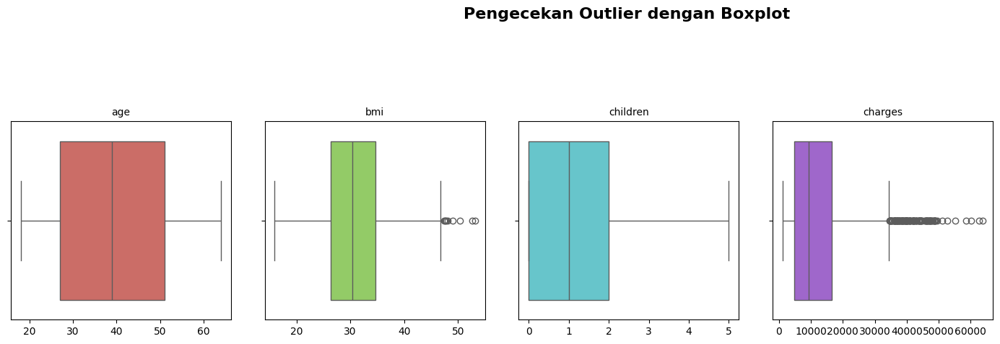
# Total Charge berdasarkan region (daerah)
charges_by_region = df.groupby('region')['charges'].sum()
# Create a bar chart
plt.bar(charges_by_region.index, charges_by_region.values, color='yellow')
# Add labels and title
plt.xlabel('Region')
plt.ylabel('Total Charges')
plt.title('Total Charges by Region')
# Rotate x-axis labels for better visibility (optional)
plt.xticks(rotation=45)
# Display the chart
plt.show()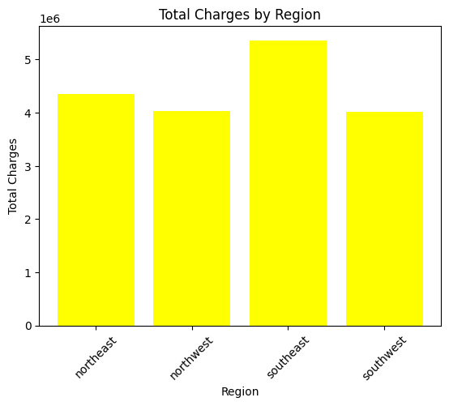
# Histogram variabel numerik
numerical_cols = ['age', 'bmi', 'children', 'charges']
# Membuathistogram
n_rows = 2
n_cols = 2
fig, axes = plt.subplots(n_rows, n_cols, figsize=(12, 10))
for i, feature in enumerate(numerical_cols):
row = i // n_cols
col = i % n_cols
sns.histplot(
data=df,
x=feature,
ax=axes[row, col],
bins=30,
kde=True, # Biar lebih informatif
color='#F8DE7E'
)
axes[row, col].grid(False)
axes[row, col].set_title(f'Distribusi {feature.upper()}', fontsize=14)
axes[row, col].set_xlabel('')
plt.tight_layout()
plt.show()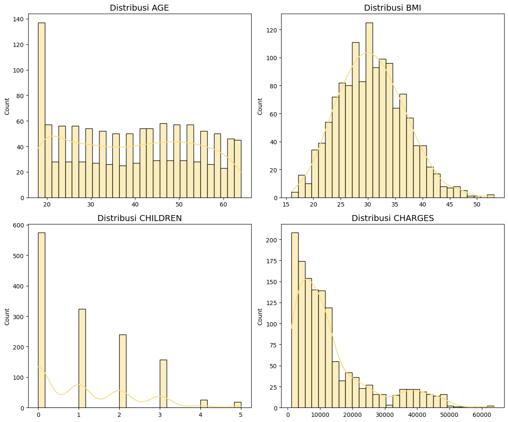
# Fitur kategorikal yang akan diplot
categorical_features = ['sex', 'smoker', 'region']
fig, axes = plt.subplots(nrows=1, ncols=3, figsize=(18, 5))
plt.style.use('seaborn-v0_8-whitegrid')
# iterasi untuk setiap fitur
for i, feature in enumerate(categorical_features):
# Membuat Count Plot (Bar Plot Frekuensi)
sns.countplot(
x=feature, # Variabel kategorikal di sumbu X
data=df, # DataFrame
ax=axes[i], # Plot di subplot ke-i
palette='pastel', # Pilihan skema warna
edgecolor='black' # Garis tepi bar
)
# Menambahkan judul dan label
axes[i].set_title(f'Jumlah {feature.upper()}', fontsize=14)
axes[i].set_xlabel(feature, fontsize=12)
axes[i].set_ylabel('Jumlah Observasi', fontsize=12)
#Menampilkan nilai hitungan di atas bar
for p in axes[i].patches:
axes[i].annotate(
f'{p.get_height()}',
(p.get_x() + p.get_width() / 2., p.get_height()),
ha='center', va='center', fontsize=10, color='black', xytext=(0, 5),
textcoords='offset points'
)
# 3. Tampilkan Plot
plt.tight_layout() # Sesuaikan jarak antar subplot
plt.show()/tmp/ipython-input-1575114448.py:11: FutureWarning:
Passing `palette` without assigning `hue` is deprecated and will be removed in v0.14.0. Assign the `x` variable to `hue` and set `legend=False` for the same effect.
sns.countplot(
/tmp/ipython-input-1575114448.py:11: FutureWarning:
Passing `palette` without assigning `hue` is deprecated and will be removed in v0.14.0. Assign the `x` variable to `hue` and set `legend=False` for the same effect.
sns.countplot(
/tmp/ipython-input-1575114448.py:11: FutureWarning:
Passing `palette` without assigning `hue` is deprecated and will be removed in v0.14.0. Assign the `x` variable to `hue` and set `legend=False` for the same effect.
sns.countplot(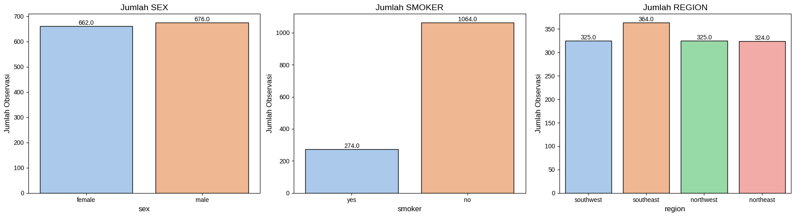
#Matriks korelasi
numerical_cols = ['age', 'bmi', 'children', 'charges']
plt.figure(figsize=(9, 7))
# Hitung dan Plot Matriks Korelasi
sns.heatmap(
df[numerical_cols].corr(),
annot=True, # Tampilkan nilai korelasi pada heatmap
cmap='Wistia', # Pilihan skema warna
fmt=".2f", # Format angka hingga 2 desimal
linewidths=0.5 # Garis antar sel
)
plt.title('Matriks Korelasi', fontsize=16)
plt.show()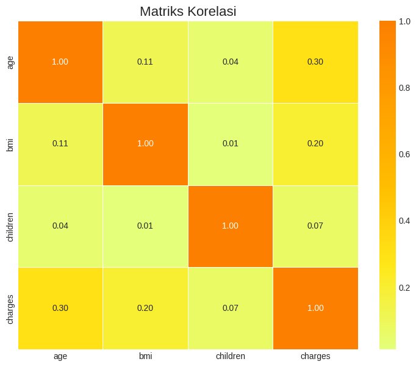
# Membuat 2 plot dalam 1 baris
fig, axes = plt.subplots(nrows=1, ncols=2, figsize=(18, 6))
plt.style.use('seaborn-v0_8-whitegrid') # Atur style
# --- PLOT 1: Scatter Plot (age vs charges) ---
sns.scatterplot(
x='age',
y='charges',
data=df,
ax=axes[0], # Plot di subplot pertama (index 0)
color='green',
alpha=0.6 # Transparansi
)
axes[0].set_title('Hubungan Age vs Charges', fontsize=14)
axes[0].set_xlabel('Age (Usia)', fontsize=12)
axes[0].set_ylabel('Charges (Biaya Asuransi)', fontsize=12)
# --- PLOT 2: Scatter Plot dengan Pembedaan Warna Smoker (Interaksi Fitur) ---
sns.scatterplot(
x='age',
y='charges',
hue='smoker', # Pembedaan warna berdasarkan status 'smoker'
data=df,
ax=axes[1], # Plot di subplot kedua (index 1)
palette={'yes': 'red', 'no': 'blue'}, # Kustomisasi warna
s=50, # Ukuran titik
alpha=0.7
)
axes[1].set_title('Hubungan Age vs Charges, Dikelompokkan oleh Smoker', fontsize=14)
axes[1].set_xlabel('Age (Usia)', fontsize=12)
axes[1].set_ylabel('Charges (Biaya Asuransi)', fontsize=12)
axes[1].legend(title='Smoker')
plt.tight_layout() # Sesuaikan jarak antar subplot
plt.show()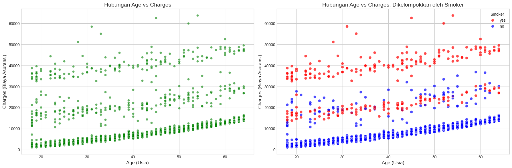
Preprocessing data
#Menghapus baris yang terduplikat
df.drop_duplicates(inplace=True)
df.shape(1337, 7)#Transformasi Logaritma pada Variabel Target
# Buat kolom baru dengan nilai charges yang sudah di-transformasi
df['charges_log'] = np.log1p(df['charges'])
#INI YA NIS
# Saat melatih model, gunakan 'charges_log' sebagai variabel target (y).
# Ingat: Setelah prediksi, Anda harus melakukan eksponensiasi balik (antilog)
# menggunakan np.expm1() untuk mendapatkan biaya yang sebenarnya.#One hot encoding pada variabel region
df_encoded = pd.get_dummies(df, columns=['region'], prefix='region', dtype=int)
df_encoded.sample(5)| age | sex | bmi | children | smoker | charges | charges_log | region_northeast | region_northwest | region_southeast | region_southwest | |
|---|---|---|---|---|---|---|---|---|---|---|---|
| 1236 | 63 | female | 21.66 | 0 | no | 14449.8544 | 9.578509 | 1 | 0 | 0 | 0 |
| 106 | 19 | female | 28.40 | 1 | no | 2331.5190 | 7.754704 | 0 | 0 | 0 | 1 |
| 403 | 49 | male | 32.30 | 3 | no | 10269.4600 | 9.237027 | 0 | 1 | 0 | 0 |
| 418 | 64 | male | 39.16 | 1 | no | 14418.2804 | 9.576322 | 0 | 0 | 1 | 0 |
| 650 | 49 | female | 42.68 | 2 | no | 9800.8882 | 9.190330 | 0 | 0 | 1 | 0 |
from sklearn.preprocessing import LabelEncoder
#Label encoding untuk 'smoker'
label_encoder = LabelEncoder()
df_encoded['smoker_encoded'] = label_encoder.fit_transform(df_encoded['smoker'])
df_encoded.sample(5)| age | sex | bmi | children | smoker | charges | charges_log | region_northeast | region_northwest | region_southeast | region_southwest | smoker_encoded | |
|---|---|---|---|---|---|---|---|---|---|---|---|---|
| 1202 | 22 | male | 32.110 | 0 | no | 2055.32490 | 7.628676 | 0 | 1 | 0 | 0 | 0 |
| 26 | 63 | female | 23.085 | 0 | no | 14451.83515 | 9.578646 | 1 | 0 | 0 | 0 | 0 |
| 1048 | 25 | female | 22.515 | 1 | no | 3594.17085 | 8.187347 | 0 | 1 | 0 | 0 | 0 |
| 1032 | 30 | female | 27.930 | 0 | no | 4137.52270 | 8.328094 | 1 | 0 | 0 | 0 | 0 |
| 524 | 42 | male | 26.070 | 1 | yes | 38245.59327 | 10.551810 | 0 | 0 | 1 | 0 | 1 |
#Label encoding untuk "sex"
df_encoded['sex_encoded'] = label_encoder.fit_transform(df_encoded['sex'])
df_encoded.sample(5)| age | sex | bmi | children | smoker | charges | charges_log | region_northeast | region_northwest | region_southeast | region_southwest | smoker_encoded | sex_encoded | |
|---|---|---|---|---|---|---|---|---|---|---|---|---|---|
| 1158 | 20 | female | 30.590 | 0 | no | 2459.72010 | 7.808209 | 1 | 0 | 0 | 0 | 0 | 0 |
| 1331 | 23 | female | 33.400 | 0 | no | 10795.93733 | 9.287018 | 0 | 0 | 0 | 1 | 0 | 0 |
| 849 | 55 | male | 32.775 | 0 | no | 10601.63225 | 9.268858 | 0 | 1 | 0 | 0 | 0 | 1 |
| 501 | 43 | male | 26.030 | 0 | no | 6837.36870 | 8.830304 | 1 | 0 | 0 | 0 | 0 | 1 |
| 669 | 40 | female | 29.810 | 1 | no | 6500.23590 | 8.779748 | 0 | 0 | 1 | 0 | 0 | 0 |
df_encoded = df_encoded[[x for x in df_encoded.columns if x not in ['smoker', 'sex']]]
df_encoded.sample(5)| age | bmi | children | charges | charges_log | region_northeast | region_northwest | region_southeast | region_southwest | smoker_encoded | sex_encoded | |
|---|---|---|---|---|---|---|---|---|---|---|---|
| 457 | 57 | 30.495 | 0 | 11840.77505 | 9.379389 | 0 | 1 | 0 | 0 | 0 | 0 |
| 1189 | 23 | 28.000 | 0 | 13126.67745 | 9.482478 | 0 | 0 | 0 | 1 | 0 | 0 |
| 1288 | 20 | 39.400 | 2 | 38344.56600 | 10.554394 | 0 | 0 | 0 | 1 | 1 | 1 |
| 887 | 36 | 30.020 | 0 | 5272.17580 | 8.570388 | 0 | 1 | 0 | 0 | 0 | 0 |
| 1030 | 46 | 23.655 | 1 | 21677.28345 | 9.984066 | 0 | 1 | 0 | 0 | 1 | 0 |
#membagi kelas target dan fitur (X)
# Kolom yang tidak boleh menjadi fitur (X)
kolom_buang = ['charges', 'charges_log']
X = df_encoded.drop(columns=kolom_buang, errors='ignore')
y = df_encoded['charges_log']X.head()| age | bmi | children | region_northeast | region_northwest | region_southeast | region_southwest | smoker_encoded | sex_encoded | |
|---|---|---|---|---|---|---|---|---|---|
| 0 | 19 | 27.900 | 0 | 0 | 0 | 0 | 1 | 1 | 0 |
| 1 | 18 | 33.770 | 1 | 0 | 0 | 1 | 0 | 0 | 1 |
| 2 | 28 | 33.000 | 3 | 0 | 0 | 1 | 0 | 0 | 1 |
| 3 | 33 | 22.705 | 0 | 0 | 1 | 0 | 0 | 0 | 1 |
| 4 | 32 | 28.880 | 0 | 0 | 1 | 0 | 0 | 0 | 1 |
y.head()| charges_log | |
|---|---|
| 0 | 9.734236 |
| 1 | 7.453882 |
| 2 | 8.400763 |
| 3 | 9.998137 |
| 4 | 8.260455 |
#split data into train and split
from sklearn.model_selection import train_test_split
X_train, X_test, y_train, y_test = train_test_split(X, y, test_size = 0.2, random_state = 42)
print("\n Hasil Pembagian Data (80:20):")
print(f"X_train (Data Latih Fitur): {X_train.shape}")
print(f"X_test (Data Uji Fitur): {X_test.shape}")
print(f"y_train (Data Latih Target): {y_train.shape}")
print(f"y_test (Data Uji Target): {y_test.shape}")
Hasil Pembagian Data (80:20):
X_train (Data Latih Fitur): (1069, 9)
X_test (Data Uji Fitur): (268, 9)
y_train (Data Latih Target): (1069,)
y_test (Data Uji Target): (268,)X_train.dtypes| 0 | |
|---|---|
| age | int64 |
| bmi | float64 |
| children | int64 |
| region_northeast | int64 |
| region_northwest | int64 |
| region_southeast | int64 |
| region_southwest | int64 |
| smoker_encoded | int64 |
| sex_encoded | int64 |
y_train.head()| charges_log | |
|---|---|
| 1114 | 7.782013 |
| 968 | 8.095863 |
| 599 | 10.418494 |
| 170 | 9.503487 |
| 275 | 9.181616 |
y_test.head()| charges_log | |
|---|---|
| 900 | 9.069912 |
| 1064 | 8.649951 |
| 1256 | 9.344674 |
| 298 | 10.564818 |
| 237 | 8.403846 |
X_train.head()| age | bmi | children | region_northeast | region_northwest | region_southeast | region_southwest | smoker_encoded | sex_encoded | |
|---|---|---|---|---|---|---|---|---|---|
| 1114 | 23 | 24.510 | 0 | 1 | 0 | 0 | 0 | 0 | 1 |
| 968 | 21 | 25.745 | 2 | 1 | 0 | 0 | 0 | 0 | 1 |
| 599 | 52 | 37.525 | 2 | 0 | 1 | 0 | 0 | 0 | 0 |
| 170 | 63 | 41.470 | 0 | 0 | 0 | 1 | 0 | 0 | 1 |
| 275 | 47 | 26.600 | 2 | 1 | 0 | 0 | 0 | 0 | 0 |
X_test.head()| age | bmi | children | region_northeast | region_northwest | region_southeast | region_southwest | smoker_encoded | sex_encoded | |
|---|---|---|---|---|---|---|---|---|---|
| 900 | 49 | 22.515 | 0 | 1 | 0 | 0 | 0 | 0 | 1 |
| 1064 | 29 | 25.600 | 4 | 0 | 0 | 0 | 1 | 0 | 0 |
| 1256 | 51 | 36.385 | 3 | 0 | 1 | 0 | 0 | 0 | 0 |
| 298 | 31 | 34.390 | 3 | 0 | 1 | 0 | 0 | 1 | 1 |
| 237 | 31 | 38.390 | 2 | 0 | 0 | 1 | 0 | 0 | 1 |
Regression tree prediction
baseline
from sklearn.linear_model import LinearRegression
from sklearn.tree import DecisionTreeRegressor
from sklearn.ensemble import RandomForestRegressor, GradientBoostingRegressor
from sklearn.metrics import mean_squared_error, mean_absolute_error, r2_score#model
dt_model = DecisionTreeRegressor()
dt_model.fit(X_train, y_train)
dt_predictions = dt_model.predict(X_test)#plot
# 1. Siapkan Data Skala Asli (Inverse Transform)
y_pred_baseline_original = np.expm1(dt_predictions)
y_test_original = np.expm1(y_test)
plt.figure(figsize=(10, 6))
# 2. Scatter Plot Baseline
plt.scatter(y_test_original, y_pred_baseline_original, color='gray', alpha=0.6, label='Baseline Predictions')
# 3. Garis Diagonal (Perfect Fit)
#
min_val = min(y_test_original)
max_val = max(y_test_original)
plt.plot([min_val, max_val], [min_val, max_val], color='red', linestyle='--', linewidth=2, label='Perfect Fit')
# plot
plt.title('Baseline Decision Tree: Actual vs. Predicted (Original Scale)', fontsize=14)
plt.xlabel('Actual Cost (Nilai Sebenarnya)', fontsize=12)
plt.ylabel('Predicted Cost (Prediksi Model)', fontsize=12)
plt.legend()
plt.grid(True, alpha=0.3)
plt.show()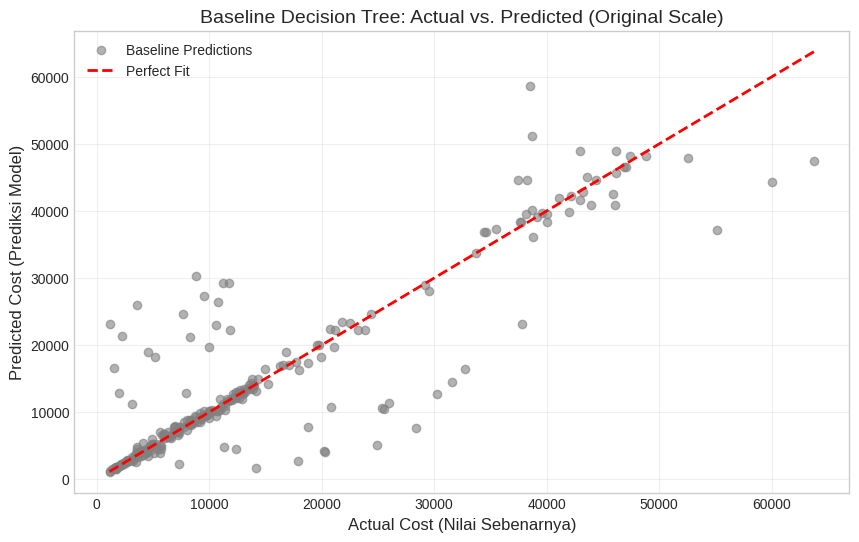
#evaluasi
# 2. Kembalikan ke skala asli (Inverse Transform)
# Gunakan np.expm1 jika saat training pakai np.log1p
y_pred_original = np.expm1(dt_predictions)
y_test_original = np.expm1(y_test)
# 3. Hitung Metrik pada Skala Asli
mse_final = mean_squared_error(y_test_original, y_pred_original)
rmse_final = np.sqrt(mse_final)
mae_final = mean_absolute_error(y_test_original, y_pred_original)
r2_final = r2_score(y_test_original, y_pred_original)
# Hitung MAPE Manual (agar aman)
mape_final = np.mean(np.abs((y_test_original - y_pred_original) / y_test_original)) * 100
print('== evaluasi baseline ==')
print(f"Original Scale MSE: {mse_final:.4f}")
print(f"Original Scale RMSE: {rmse_final:.4f}")
print(f"Original Scale MAE: {mae_final:.4f}")
print(f"Original Scale MAPE: {mape_final:.2f}%")
print(f"Original Scale R2: {r2_final:.4f}")== evaluasi baseline ==
Original Scale MSE: 37930409.1616
Original Scale RMSE: 6158.7669
Original Scale MAE: 2835.1316
Original Scale MAPE: 37.10%
Original Scale R2: 0.7936cek overfitting
train_score = dt_model.score(X_train, y_train)
test_score = dt_model.score(X_test, y_test)
print(f"Training R2: {train_score}")
print(f"Testing R2: {test_score:.4f}")
if train_score - test_score > 0.1:
print("Status: Overfitting-> Lanjut ke Tuning")
else:
print("Status: Fit atau Underfitting")Training R2: 1.0
Testing R2: 0.7180
Status: Overfitting-> Lanjut ke Tuningw/ tuning hyperparameter
from sklearn.tree import DecisionTreeRegressor
from sklearn.model_selection import GridSearchCV
from sklearn.metrics import mean_absolute_error, mean_squared_error, r2_score
# 1. Feature Engineering (Sangat Recommended untuk dataset ini)
# Pastikan dilakukan pada copy agar tidak merusak data asli jika run ulang
X_train_eng = X_train.copy()
X_test_eng = X_test.copy()
X_train_eng['bmi_smoker'] = X_train_eng['bmi'] * X_train_eng['smoker_encoded']
X_test_eng['bmi_smoker'] = X_test_eng['bmi'] * X_test_eng['smoker_encoded']
# 2. Setup GridSearch
param_grid = {
'max_depth': [4, 6, 8, 9, 10],
'min_samples_leaf': [10, 20, 30], # Mencegah overfitting pada nilai BMI spesifik
'min_samples_split': [20, 40, 60]
}
# Ingat: y_train diasumsikan sudah di-Log (np.log1p)
dt = DecisionTreeRegressor(random_state=42)
grid = GridSearchCV(dt, param_grid, cv=5, scoring='neg_mean_squared_error')
# 3. Training
grid.fit(X_train_eng, y_train) # y_train log scale
print("Best Params:", grid.best_params_)
# 4. Prediksi & Evaluasi (Inverse Transform)
best_model = grid.best_estimator_
pred_log = best_model.predict(X_test_eng)
# Kembalikan ke skala asli (Rupiah/Dollar)
y_pred_final = np.expm1(pred_log)
y_test_final = np.expm1(y_test)
# Hitung Metrik
mse = mean_squared_error(y_test_final, y_pred_final)
rmse = np.sqrt(mse)
mae = mean_absolute_error(y_test_final, y_pred_final)
mape = np.mean(np.abs((y_test_final - y_pred_final) / y_test_final)) * 100
r2 = r2_score(y_test_final, y_pred_final)
#evaluasi tuning
print('== evaluasi tuning ==')
print(f"Final R2 Score: {r2:.4f}")
print(f"Final MSE: {mse:.4f}")
print(f"Final RMSE: {rmse:.2f}")
print(f"Final MAE: {mae:.2f}")
print(f"Final MAPE: {mape:.2f}%")Best Params: {'max_depth': 4, 'min_samples_leaf': 10, 'min_samples_split': 20}
== evaluasi tuning ==
Final R2 Score: 0.8957
Final MSE: 19168285.2303
Final RMSE: 4378.16
Final MAE: 2287.93
Final MAPE: 20.60%# Buat DataFrame perbandingan
comp = pd.DataFrame({
'Model': ['Baseline model','Decision Tree (Tuned)'],
'R2 Score': [0.7840, f'{r2:.4f}'],
'MSE' : [39690042.6483, f'{mse:.4f}'],
'RMSE': [6300.0034,f'{rmse:.4f}'],
'MAPE': [f"39.27%", f"{mape:.2f}%"],
'MAE': [3009.9635, f'{mae:.2f}']
} )
print("=== LEADERBOARD MODEL ===")
print(comp)=== LEADERBOARD MODEL ===
Model R2 Score MSE RMSE MAPE MAE
0 Baseline model 0.784 39690042.6483 6300.0034 39.27% 3009.9635
1 Decision Tree (Tuned) 0.8957 19168285.2303 4378.1600 20.60% 2287.93#overfitting
train_score = best_model.score(X_train_eng, y_train)
test_score = best_model.score(X_test_eng, y_test)
print(f"Training R2: {train_score:.4f}")
print(f"Testing R2: {test_score:.4f}")
if train_score - test_score > 0.1:
print("Status: Overfitting-> Lanjut ke Tuning")
else:
print("Status: Fit atau Underfitting")Training R2: 0.8184
Testing R2: 0.8602
Status: Fit atau Underfittingfrom sklearn.tree import plot_tree
plt.figure(figsize=(25, 10))
plot_tree(best_model,
feature_names=X_train_eng.columns,
filled=True,
fontsize=12,
rounded=True,
precision=2)
plt.title("Struktur Pohon Regresi Terbaik (R2: 0.89)", fontsize=20)
plt.show()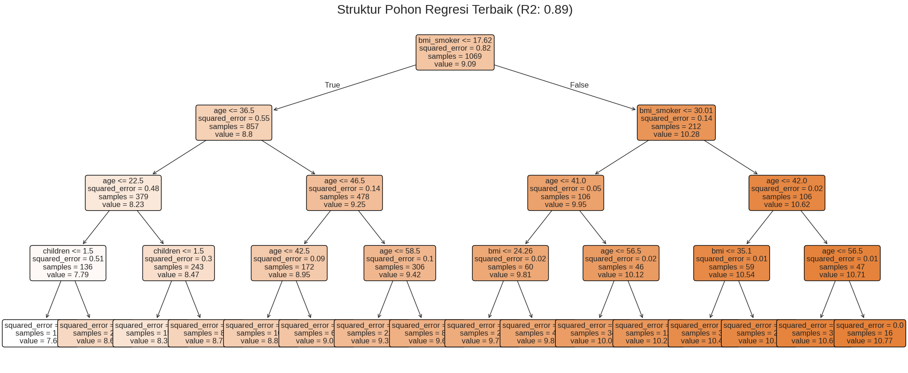
import matplotlib.pyplot as plt
plt.figure(figsize=(10, 6))
# 1. Scatter Plot (Titik-titik data)
# Gunakan y_test_final dan y_pred_final dari hasil tuning terakhir
plt.scatter(y_test_final, y_pred_final, color='orange', alpha=0.6, label='Prediction Data')
# 2. Garis Diagonal (Garis Sempurna)
min_val = min(y_test_final)
max_val = max(y_test_final)
plt.plot([min_val, max_val], [min_val, max_val], color='black', linestyle='--', linewidth=2, label='Perfect Fit')
# 3. Plot
plt.title('Optimized Decision Tree: Actual vs. Predicted (Original Scale)', fontsize=14)
plt.xlabel('Actual Cost (Nilai Sebenarnya)', fontsize=12)
plt.ylabel('Predicted Cost (Prediksi Model)', fontsize=12)
plt.legend()
plt.grid(True, alpha=0.3)
plt.show()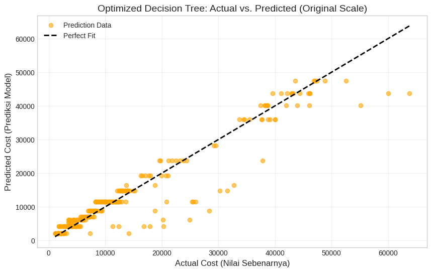
# Ambil importance dari model terbaik
feat_importances = pd.Series(best_model.feature_importances_, index=X_train_eng.columns)
# Plot 10 fitur terpenting
feat_importances.nlargest(10).plot(kind='barh', color='orange')
plt.title("Faktor Terpenting Penentu Biaya Medis")
plt.show()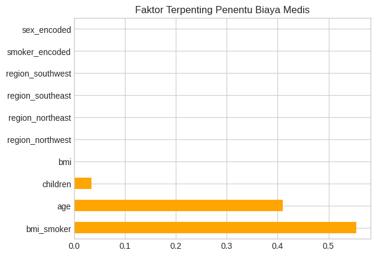
df_importance = feat_importances.reset_index()
df_importance.columns = ['Nama Fitur', 'Nilai Importance']
df_importance = df_importance.sort_values(by='Nilai Importance', ascending=False).reset_index(drop=True)
print("=== TABEL FEATURE IMPORTANCE ===")
print(df_importance.round(4))=== TABEL FEATURE IMPORTANCE ===
Nama Fitur Nilai Importance
0 bmi_smoker 0.5550
1 age 0.4104
2 children 0.0339
3 bmi 0.0007
4 region_northwest 0.0000
5 region_northeast 0.0000
6 region_southeast 0.0000
7 region_southwest 0.0000
8 smoker_encoded 0.0000
9 sex_encoded 0.0000Random forest (for comparison)
from sklearn.ensemble import RandomForestRegressor
# Inisialisasi model Random Forest Regressor
# Gunakan parameter yang umumnya baik sebagai starting point atau hasil dari tuning sebelumnya jika ada
rf_model = RandomForestRegressor(n_estimators=100, random_state=42, n_jobs=-1) # n_jobs=-1 untuk menggunakan semua core CPU
# Latih model pada data latih
rf_model.fit(X_train_eng, y_train)
# Lakukan prediksi pada data uji (dalam skala log)
rf_predictions_log = rf_model.predict(X_test_eng)from sklearn.metrics import mean_squared_error, mean_absolute_error, r2_score
import numpy as np
import matplotlib.pyplot as plt
# Kembalikan prediksi dan nilai sebenarnya ke skala asli
rf_predictions_original = np.expm1(rf_predictions_log)
y_test_original_rf = np.expm1(y_test)
# Hitung Metrik Evaluasi
mse_rf = mean_squared_error(y_test_original_rf, rf_predictions_original)
rmse_rf = np.sqrt(mse_rf)
mae_rf = mean_absolute_error(y_test_original_rf, rf_predictions_original)
mape_rf = np.mean(np.abs((y_test_original_rf - rf_predictions_original) / y_test_original_rf)) * 100
r2_rf = r2_score(y_test_original_rf, rf_predictions_original)
print('== Evaluasi Random Forest ==')
print(f"Original Scale MSE: {mse_rf:.4f}")
print(f"Original Scale RMSE: {rmse_rf:.4f}")
print(f"Original Scale MAE: {mae_rf:.4f}")
print(f"Original Scale MAPE: {mape_rf:.2f}%")
print(f"Original Scale R2: {r2_rf:.4f}")
# Plot Actual vs. Predicted values
plt.figure(figsize=(10, 6))
plt.scatter(y_test_original_rf, rf_predictions_original, color='limegreen', alpha=0.6, label='Random Forest Predictions')
# Garis diagonal untuk 'perfect fit'
min_val_rf = min(y_test_original_rf.min(), rf_predictions_original.min())
max_val_rf = max(y_test_original_rf.max(), rf_predictions_original.max())
plt.plot([min_val_rf, max_val_rf], [min_val_rf, max_val_rf], color='red', linestyle='--', linewidth=2, label='Perfect Fit')
plt.title('Random Forest: Actual vs. Predicted (Original Scale)', fontsize=14)
plt.xlabel('Actual Cost (Nilai Sebenarnya)', fontsize=12)
plt.ylabel('Predicted Cost (Prediksi Model)', fontsize=12)
plt.legend()
plt.grid(True, alpha=0.3)
plt.show()== Evaluasi Random Forest ==
Original Scale MSE: 19288881.3472
Original Scale RMSE: 4391.9109
Original Scale MAE: 2059.6358
Original Scale MAPE: 19.84%
Original Scale R2: 0.8950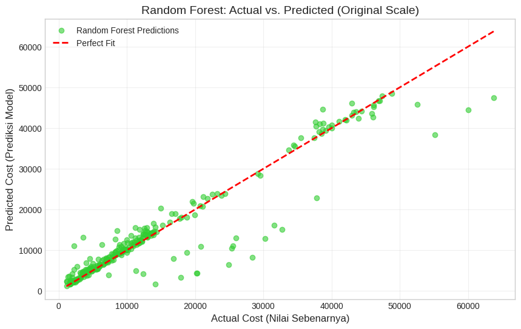
# Cek overfitting untuk Random Forest (pada skala log)
train_r2_rf = rf_model.score(X_train_eng, y_train)
test_r2_rf = rf_model.score(X_test_eng, y_test)
print(f"Training R2 (log scale): {train_r2_rf:.4f}")
print(f"Testing R2 (log scale): {test_r2_rf:.4f}")
if train_r2_rf - test_r2_rf > 0.1:
print("Status: Random Forest mungkin mengalami Overfitting.")
else:
print("Status: Random Forest terlihat Fit atau Underfitting.")Training R2 (log scale): 0.9704
Testing R2 (log scale): 0.8502
Status: Random Forest mungkin mengalami Overfitting.# Buat DataFrame perbandingan
comparison = pd.DataFrame({
'Model': ['Decision Tree (Tuned)', 'Random Forest (Default)'],
'R2 Score': [0.8957, r2_rf],
'MSE' : [19168285.2303, mse_rf],
'RMSE': [4378.16, rmse_rf],
'MAPE': [f"20.60%", f"{mape_rf:.2f}%"],
'MAE': [2287.93, mae_rf]
})
print("=== LEADERBOARD MODEL ===")
print(comparison)=== LEADERBOARD MODEL ===
Model R2 Score MSE RMSE MAPE \
0 Decision Tree (Tuned) 0.89570 1.916829e+07 4378.160000 20.60%
1 Random Forest (Default) 0.89503 1.928888e+07 4391.910899 19.84%
MAE
0 2287.930000
1 2059.635831 Hasil
Berdasarkan hasil evaluasi, model Random Forest memberikan performa terbaik dengan nilai MAPE paling rendah dibandingkan dua pendekatan lainnya. Hal ini menunjukkan bahwa metode ensemble mampu meningkatkan akurasi prediksi dengan mengurangi overfitting yang sering terjadi pada single decision tree.